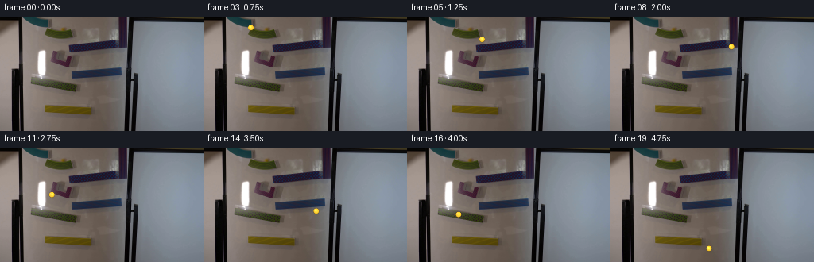
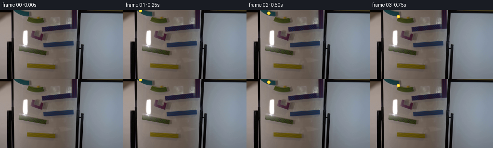

CODING AGENTS AS PIXEL WORLD MODELS
traex/DeepSeek-V4.1-Flash · 0105
点击播放 · 原生 RGB 像素
逐轮保存的候选
回放视频、检查图与代码变化。
每份候选均可单独播放。实际图片检查记录在下方工具轨迹中。
候选 01播放与检查图
点击播放 · 原生 RGB 像素
展开代码变化
--- 上一保存版本
+++ 本次保存版本
@@ -0,0 +1,199 @@
+from pathlib import Path
+
+import cv2
+import numpy as np
+from PIL import Image
+from scipy.interpolate import CubicSpline
+
+import artifact_io
+
+
+CASE_DIR = Path(__file__).resolve().parent
+WIDTH, HEIGHT = 256, 144
+N_FRAMES = 20
+SUPERSAMPLE = 8
+
+
+def smooth_path(points, samples=2400):
+ """Interpolate a smooth path through rail centerline control points."""
+ points = np.asarray(points, dtype=np.float64)
+ chord = np.r_[0.0, np.cumsum(np.linalg.norm(np.diff(points, axis=0), axis=1))]
+ chord /= chord[-1]
+ spline_x = CubicSpline(chord, points[:, 0], bc_type="natural")
+ spline_y = CubicSpline(chord, points[:, 1], bc_type="natural")
+ dense_t = np.linspace(0.0, 1.0, samples)
+ dense = np.column_stack((spline_x(dense_t), spline_y(dense_t)))
+ distance = np.r_[0.0, np.cumsum(np.linalg.norm(np.diff(dense, axis=0), axis=1))]
+ distance /= distance[-1]
+ return dense, distance
+
+
+def positions_along_path(points, n_frames):
+ dense, normalized_distance = smooth_path(points)
+
+ # The marble starts at rest and gains speed as it descends the course.
+ frame_t = np.arange(n_frames, dtype=np.float64) / (n_frames - 1)
+ progress = 0.105 * frame_t + 0.895 * frame_t**1.62
+ progress[0] = 0.0
+ progress[-1] = 1.0
+
+ x = np.interp(progress, normalized_distance, dense[:, 0])
+ y = np.interp(progress, normalized_distance, dense[:, 1])
+ return np.column_stack((x, y))
+
+
+def sphere_overlay(center, radius, phase):
+ """Render a yellow glass sphere and its contact shadow at 8x resolution."""
+ cx, cy = center
+ pad = radius * 3.1
+ x0 = max(0, int(np.floor(cx - pad)))
+ y0 = max(0, int(np.floor(cy - pad)))
+ x1 = min(WIDTH, int(np.ceil(cx + pad)) + 1)
+ y1 = min(HEIGHT, int(np.ceil(cy + pad)) + 1)
+ if x1 <= x0 or y1 <= y0:
+ return None
+
+ ss = SUPERSAMPLE
+ yy, xx = np.mgrid[
+ (y0 * ss) : (y1 * ss),
+ (x0 * ss) : (x1 * ss),
+ ].astype(np.float64)
+ px = (xx + 0.5) / ss
+ py = (yy + 0.5) / ss
+ dx = px - cx
+ dy = py - cy
+ rr = np.hypot(dx, dy) / radius
+
+ rgb = np.zeros((*rr.shape, 3), dtype=np.float64)
+ alpha = np.zeros_like(rr)
+
+ # Soft contact shadow, offset slightly down and to the right.
+ sx = (px - (cx + 0.58 * radius)) / (1.32 * radius)
+ sy = (py - (cy + 1.45 * radius)) / (0.52 * radius)
+ shadow = np.exp(-2.8 * (sx * sx + sy * sy))
+ shadow *= np.clip(1.0 - rr / 1.7, 0.0, 1.0)
+ rgb[:] = np.array([41.0, 30.0, 13.0])
+ alpha = 0.38 * shadow
+
+ inside = rr < 1.0
+ if not np.any(inside):
+ return x0, y0, x1, y1, rgb, alpha
+
+ # A sphere normal with a little refraction and a yellow glass body.
+ z = np.sqrt(np.clip(1.0 - rr * rr, 0.0, 1.0))
+ nx = np.divide(dx, radius, out=np.zeros_like(dx), where=inside)
+ ny = np.divide(dy, radius, out=np.zeros_like(dy), where=inside)
+
+ # Rolling caustic, kept subtle at this small scale.
+ swirl = np.exp(-((nx - 0.22 * np.cos(phase)) ** 2 + (ny + 0.28) ** 2) / 0.13)
+ body = np.empty((*rr.shape, 3), dtype=np.float64)
+ body[..., 0] = 246.0 + 7.0 * z
+ body[..., 1] = 191.0 + 42.0 * z
+ body[..., 2] = 26.0 + 74.0 * z
+
+ # Dark lower-right rim and a warm transmitted-light edge.
+ edge = np.clip((rr - 0.70) / 0.30, 0.0, 1.0)
+ lower = np.clip((ny + 0.20) / 1.20, 0.0, 1.0)
+ body *= (1.0 - 0.33 * edge * lower)[..., None]
+ body[..., 0] += 15.0 * edge * np.clip(-ny, 0.0, 1.0)
+ body[..., 1] += 18.0 * edge * np.clip(-ny, 0.0, 1.0)
+
+ # Small window reflection, bright specular pin, and secondary glint.
+ window = np.exp(
+ -(((nx + 0.40) / 0.20) ** 2 + ((ny + 0.34) / 0.31) ** 2)
+ )
+ pin = np.exp(
+ -(((nx + 0.47) / 0.085) ** 2 + ((ny + 0.48) / 0.10) ** 2)
+ )
+ glint = np.exp(
+ -(((nx - 0.35) / 0.14) ** 2 + ((ny - 0.32) / 0.11) ** 2)
+ )
+ body = body * (1.0 + 0.28 * swirl[..., None])
+ body = body * (1.0 - 0.20 * window[..., None]) + 255.0 * 0.20 * window[..., None]
+ body = body * (1.0 - 0.55 * pin[..., None]) + 255.0 * 0.55 * pin[..., None]
+ body = body * (1.0 - 0.16 * glint[..., None]) + 255.0 * 0.16 * glint[..., None]
+
+ # Thin outer edge antialiasing.
+ coverage = np.clip((1.0 - rr) * radius * ss, 0.0, 1.0)
+ rgb[inside] = body[inside]
+ alpha[inside] = coverage[inside]
+ return x0, y0, x1, y1, rgb, alpha
+
+
+def composite_overlay(base, overlay):
+ if overlay is None:
+ return base
+ x0, y0, x1, y1, rgb, alpha = overlay
+ h = y1 - y0
+ w = x1 - x0
+ small_alpha = cv2.resize(alpha, (w, h), interpolation=cv2.INTER_AREA)
+ small_rgb = cv2.resize(rgb, (w, h), interpolation=cv2.INTER_AREA)
+ out = base.astype(np.float64).copy()
+ region = out[y0:y1, x0:x1]
+ a = small_alpha[..., None]
+ region[:] = region * (1.0 - a) + small_rgb * a
+ return np.clip(np.rint(out), 0, 255).astype(np.uint8)
+
+
+def main():
+ base = np.array(Image.open(CASE_DIR / "first_frame.png").convert("RGB"))
+ assert base.shape == (HEIGHT, WIDTH, 3)
+
+ # Control points follow the colored rail runs and their short transitions.
+ points = [
+ (29.0, -1.0),
+ (39.0, 3.0),
+ (56.0, 12.0),
+ (74.0, 20.0),
+ (89.0, 25.0),
+ (98.0, 31.0),
+ (118.0, 36.0),
+ (139.0, 34.5),
+ (157.0, 31.0),
+ (151.0, 39.0),
+ (131.0, 41.5),
+ (108.0, 43.0),
+ (91.0, 49.0),
+ (78.0, 55.0),
+ (65.0, 60.0),
+ (75.0, 65.0),
+ (91.0, 70.0),
+ (111.0, 71.5),
+ (132.0, 70.5),
+ (151.0, 68.0),
+ (148.0, 76.0),
+ (130.0, 81.0),
+ (111.0, 86.0),
+ (95.0, 90.0),
+ (78.0, 86.0),
+ (59.0, 83.0),
+ (40.0, 80.0),
+ (45.0, 92.0),
+ (54.0, 102.0),
+ (62.0, 110.0),
+ (76.0, 114.0),
+ (91.0, 117.0),
+ (105.0, 119.0),
+ (115.0, 121.0),
+ (124.0, 127.0),
+ ]
+ positions = positions_along_path(points, N_FRAMES)
+ radius = 3.65
+
+ frames = np.repeat(base[None, ...], N_FRAMES, axis=0)
+ for index in range(1, N_FRAMES):
+ phase = (index - 1) * 1.28
+ overlay = sphere_overlay(positions[index], radius, phase)
+ frames[index] = composite_overlay(base, overlay)
+
+ # Contract requirement: frame 00 is the untouched source frame.
+ frames[0] = base
+ artifact_io.save(frames, CASE_DIR)
+
+ print("frame centers:")
+ for index, (x, y) in enumerate(positions):
+ print(f" {index:02d}: ({x:6.2f}, {y:6.2f})")
+
+
+if __name__ == "__main__":
+ main()
候选 02播放与检查图
点击播放 · 原生 RGB 像素


展开代码变化
--- 上一保存版本
+++ 本次保存版本
@@ -87,9 +87,9 @@
# Rolling caustic, kept subtle at this small scale.
swirl = np.exp(-((nx - 0.22 * np.cos(phase)) ** 2 + (ny + 0.28) ** 2) / 0.13)
body = np.empty((*rr.shape, 3), dtype=np.float64)
- body[..., 0] = 246.0 + 7.0 * z
- body[..., 1] = 191.0 + 42.0 * z
- body[..., 2] = 26.0 + 74.0 * z
+ body[..., 0] = 248.0 + 5.0 * z
+ body[..., 1] = 174.0 + 43.0 * z
+ body[..., 2] = 13.0 + 49.0 * z
# Dark lower-right rim and a warm transmitted-light edge.
edge = np.clip((rr - 0.70) / 0.30, 0.0, 1.0)
可观测工具轨迹
实际执行的命令与返回图片。
命令 1exit 0
/bin/bash -c "pwd && rg --files -g '"'!*__pycache__*'"'"
命令 2exit 0
/bin/bash -c "sed -n '1,240p' prompt.txt"
命令 3exit 0
/bin/bash -c "sed -n '1,280p' GENERATION_RULES.md"
命令 4exit 0
/bin/bash -c 'file first_frame.png && identify first_frame.png 2>/dev/null || true && ls -lah'
命令 5exit 0
/bin/bash -c "sed -n '1,260p' artifact_io.py"
命令 6exit 0
/bin/bash -c "sed -n '1,260p' player_template.html"
命令 7exit 0
/bin/bash -c "python - <<'PY'
from PIL import Image
im=Image.open('first_frame.png')
print(im.size, im.mode)
print(im.getbbox())
print(im.info)
PY"命令 8exit 0
/bin/bash -c "python - <<'PY'
from PIL import Image
import numpy as np
from collections import Counter
im=np.array(Image.open('first_frame.png'))
print('shape', im.shape, 'min/max', im.min((0,1)), im.max((0,1)), 'mean', im.mean((0,1)))
# quantize 16 bins
q=(im//16)*16
c=Counter(map(tuple,q.reshape(-1,3)))
for col,n in c.most_common(30): print(col,n, round(n/(256*144)*100,1))
# per row mean + per col mean
print('row means sample')
for y in range(0,144,8):
a=im[y:y+8].mean((0,1)); print(y, *(round(float(v),1) for v in a))
PY"命令 9exit 0
/bin/bash -c "python - <<'PY'
from PIL import Image
import numpy as np
im=np.array(Image.open('first_frame.png')).astype(float)
r,g,b=im[...,0],im[...,1],im[...,2]
mx=im.max(2); mn=im.min(2); sat=(mx-mn)/(mx+1e-6)
# masks
for name,m in [
('yellow',(r>120)&(g>100)&(b<0.65*g)&(r>1.1*b)),
('bright yellow',(r>160)&(g>140)&(b<80)),
('red',(r>120)&(r>1.4*g)&(r>1.4*b)),
('blue',(b>110)&(b>1.3*r)&(b>1.15*g)),
('green',(g>100)&(g>1.25*r)&(g>1.15*b)),
('white',(r>200)&(g>200)&(b>190)),
('dark',(mx<35)),
]:
ys,xs=np.where(m)
print(name, len(xs), ('bbox', (xs.min(),ys.min(),xs.max(),ys.max()), 'centroid',(xs.mean(),ys.mean())) if len(xs) else '')
# coarse char map based saturation and hue? luminance
chars='@%#*+=-:. '
for mode in ['lum','hue']:
print('\\nMODE',mode)
for y in range(0,144,3):
row=''
for x in range(0,256,2):
block=im[y:y+3,x:x+2]
R,G,B=block.mean((0,1))
if mode=='lum':
v=(0.2126*R+0.7152*G+0.0722*B)/256
row+=chars[min(9,int(v*10))]
else:
mx=max(R,G,B); mn=min(R,G,B); s=(mx-mn)/(mx+1e-6)
if mx<25: c=' '
elif s<.10: c='.'
elif R>G*1.12 and R>B*1.12: c='R'
elif G>R*1.12 and G>B*1.10: c='G'
elif B>R*1.12 and B>G*1.08: c='B'
elif R>B*1.18 and G>B*1.18: c='Y'
elif R>G*1.12 and B>G*1.10: c='M'
else: c='?'
row+=c
print(row.rstrip())
PY"命令 10exit 0
/bin/bash -c "python - <<'PY'
try:
import cv2; print('cv2',cv2.__version__)
except Exception as e: print('no cv2',e)
try:
import scipy; print('scipy',scipy.__version__)
except Exception as e: print('no scipy',e)
PY"命令 11exit 0
/bin/bash -c "python - <<'PY'
from PIL import Image
import numpy as np, cv2
im=np.array(Image.open('first_frame.png'))
# print selected pixel values and neighborhoods to understand scene
for y in [0,8,20,30,40,50,60,70,80,90,100,110,120,130,140]:
print(y, [(x,tuple(im[y,x])) for x in [0,10,20,30,40,50,60,80,100,120,140,150,160,180,200,220,240,255]])
PY"命令 12exit 0
/bin/bash -c "python - <<'PY'
import cv2, numpy as np
from PIL import Image
im=cv2.imread('first_frame.png')
g=cv2.cvtColor(im,cv2.COLOR_BGR2GRAY)
# upscale to see Canny structure
for th in [30,50,80,110]:
e=cv2.Canny(g,th,th*2)
lines=cv2.HoughLinesP(e,1,np.pi/180,threshold=18,minLineLength=18,maxLineGap=4)
print('TH',th,'edges',int(e.sum()/255),'lines',0 if lines is None else len(lines))
if lines is not None:
vals=[]
for l in lines[:,0]:
x1,y1,x2,y2=map(int,l); dx=x2-x1; dy=y2-y1; ln=(dx*dx+dy*dy)**.5; ang=np.degrees(np.arctan2(dy,dx))
vals.append((round(ln,1),round(ang,1),(x1,y1,x2,y2)))
for v in sorted(vals,reverse=True)[:30]: print(v)
PY"命令 13exit 0
/bin/bash -c "python - <<'PY'
from PIL import Image
im=Image.open('first_frame.png')
# Create enlarged nearest/block image in tmp for numeric debugging maybe use cv2 channels
im.resize((1024,576), Image.Resampling.NEAREST).save('.tmp/first_nearest.png')
im.resize((1024,576), Image.Resampling.LANCZOS).save('.tmp/first_lanczos.png')
PY"命令 14exit 0
/bin/bash -c "python - <<'PY'
import cv2,numpy as np
from PIL import Image
im=np.array(Image.open('first_frame.png'))
# Print structured color segments by row, nearest sampled and segment runs
for y in range(0,144,2):
row=im[y]
# colors quantized to 32
q=(row//32)*32
# run length encoded categories of mean/dominance
cats=[]
for R,G,B in q:
mx=max(R,G,B);mn=min(R,G,B)
if mx<32: c=' '
elif mx-mn<32: c='W' if mx>=128 else 'w'
elif R>G*1.25 and R>B*1.25: c='R'
elif G>R*1.25 and G>B*1.15: c='G'
elif B>R*1.25 and B>G*1.12: c='B'
elif R>B*1.35 and G>B*1.25: c='Y'
elif R>G*1.18 and B>G*1.1: c='M'
else: c='.'
cats.append(c)
# RLE chars min len 2
runs=[]; start=0
for x in range(1,257):
if x==256 or cats[x]"'!=cats[start]:
if x-start>=2: runs.append(f'"'{start}:{x-1}{cats[start]}')
start=x
print(f'{y:3d}', ' '.join(runs))
PY"命令 15exit 0
/bin/bash -c "python - <<'PY'
from PIL import Image
import numpy as np
im=np.array(Image.open('first_frame.png'))
# HSV values, top hue/brightness/sat clusters in central scene
import cv2
hsv=cv2.cvtColor(im,cv2.COLOR_RGB2HSV)
for name,(x0,y0,x1,y1) in {'all':(0,0,256,144),'central':(30,15,160,130),'leftwall':(0,0,30,144),'rightwall':(170,0,256,144)}.items():
a=hsv[y0:y1,x0:x1]
H,S,V=[a[...,i].reshape(-1) for i in range(3)]
# hist hue among saturation >50, val>40
m=(S>50)&(V>40)
hh=np.bincount(H[m],minlength=180)
print(name,'sat pix',m.sum())
print('hues',sorted(enumerate(hh),key=lambda t:t[1],reverse=True)[:15])
# sat bins
print('S',np.histogram(S[m],bins=[0,40,80,120,160,200,240,256])[0])
PY"命令 16exit 0
/bin/bash -c "python - <<'PY'
import cv2,numpy as np
from PIL import Image
im=np.array(Image.open('first_frame.png'))
# kmeans in RGB + x,y lightly
X=np.c_[im.reshape(-1,3).astype(np.float32)]
crit=(cv2.TERM_CRITERIA_EPS+cv2.TERM_CRITERIA_MAX_ITER,60,.2)
_,lab,cent=cv2.kmeans(X,14,None,crit,8,cv2.KMEANS_PP_CENTERS)
lab=lab.reshape(144,256); cent=cent.astype(int)
for i,c in sorted(enumerate(cent),key=lambda t:-np.sum(lab==t[0])):
ys,xs=np.where(lab==i)
print(f'{i:2d} rgb {tuple(c)} n={len(xs):5d} bbox={xs.min():3d},{ys.min():3d}-{xs.max():3d},{ys.max():3d} ctr={xs.mean():5.1f},{ys.mean():5.1f}')
chars='0123456789ABCDEF'
for y in range(0,144,2):
print(f'{y:3d}', ''.join(chars[lab[y,x]] for x in range(0,256,2)))
PY"命令 17exit 0
/bin/bash -c "python - <<'PY'
from PIL import Image
import numpy as np, cv2
im=np.array(Image.open('first_frame.png'))
hsv=cv2.cvtColor(im,cv2.COLOR_RGB2HSV)
# regions grid 16x16, report mean RGB + HSV and edge density
for y in range(0,144,16):
row=[]
for x in range(0,256,16):
b=im[y:y+16,x:x+16].reshape(-1,3).mean(0)
h=hsv[y:y+16,x:x+16].reshape(-1,3)
sat=h[:,1].mean(); v=h[:,2].mean()
row.append(f'{int(b[0]):3d},{int(b[1]):3d},{int(b[2]):3d}')
print(f'y{y:3d}', ' | '.join(row))
PY"命令 18exit 0
/bin/bash -c "python - <<'PY'
from PIL import Image
import numpy as np, cv2
im=np.array(Image.open('first_frame.png')).astype(float)
# Try find repeated local features / edge structure. Print edges at 2x maybe using chars
g=cv2.cvtColor(im.astype(np.uint8),cv2.COLOR_RGB2GRAY)
g=cv2.GaussianBlur(g,(3,3),0)
e=cv2.Canny(g,25,70)
# spatial edge map downsample 2x2 max
chars=' .:-=+*#%@'
for y in range(0,144,2):
s=''
for x in range(0,256,2):
v=e[y:y+2,x:x+2].max()/255
s+=chars[int(v*9)]
print(f'{y:3d}',s.rstrip())
PY"命令 19exit 0
/bin/bash -c "python - <<'PY'
import cv2,numpy as np
from PIL import Image
im=cv2.imread('first_frame.png')
g=cv2.cvtColor(im,cv2.COLOR_BGR2GRAY)
e=cv2.Canny(g,30,80)
# connected components edges, report large
n,lab,stats,cent=cv2.connectedComponentsWithStats(e,8)
for i in np.argsort(stats[1:,4])[::-1][:25]+1:
x,y,w,h,a=stats[i]; print(i,'x',x,'y',y,'w',w,'h',h,'area',a,'ctr',cent[i])
PY"命令 20exit 0
/bin/bash -c "python - <<'PY'
from PIL import Image
import numpy as np, cv2
im=np.array(Image.open('first_frame.png'))
# Check exact value levels around whiteboard and likely image compression: quantiles, unique values
for y,x in [(50,50),(50,52),(50,54),(20,100),(100,100),(120,80),(110,56),(115,90)]:
print((x,y), im[y,x])
# row-wise vertical derivative abs mean and max, horizontal derivative
lum=cv2.cvtColor(im,cv2.COLOR_RGB2GRAY).astype(float)
dx=np.abs(np.diff(lum,axis=1)); dy=np.abs(np.diff(lum,axis=0))
print('strong x derivatives')
for y in range(0,144):
ix=np.argsort(dx[y])[-8:][::-1]
if dx[y,ix[0]]>50: print(y, [(int(x),round(dx[y,x],1)) for x in ix])
PY"命令 21exit 0
/bin/bash -c "python - <<'PY'
import cv2,numpy as np
from PIL import Image
im=np.array(Image.open('first_frame.png'))
g=cv2.cvtColor(im,cv2.COLOR_RGB2GRAY)
e=cv2.Canny(cv2.GaussianBlur(g,(3,3),0),25,70)
hsv=cv2.cvtColor(im,cv2.COLOR_RGB2HSV)
# define chars by color categories plus edges
def ch(x,y):
R,G,B=im[y,x]; H,S,V=hsv[y,x]
if e[y,x]: c='#'
elif V<22: c=' '
elif S<25: c='.' if V<130 else 'o' if V<190 else 'W'
elif H<8 or H>170: c='R'
elif H<22: c='O'
elif H<35: c='Y'
elif H<55: c='G'
elif H<95: c='C'
elif H<130: c='B'
elif H<160: c='P'
else: c='M'
return c
for name,(x0,y0,x1,y1) in {
'top':(30,0,160,45),
'middle':(30,35,160,105),
'lower':(30,100,160,144),
'marblearea':(40,35,65,85),
}.items():
print('\\n###',name)
for y in range(y0,y1):
print(f'{y:3d} '+''.join(ch(x,y) for x in range(x0,x1)))
PY"命令 22exit 0
/bin/bash -c "python - <<'PY'
import cv2,numpy as np
from PIL import Image
im=np.array(Image.open('first_frame.png'))
# inspect likely yellow marble pixels exact coords and local 15x15 RGB summaries
for y in range(105,125):
row=[]
for x in range(45,75):
R,G,B=im[y,x]
if int(R)-int(B)>20 and int(G)-int(B)>15:
row.append((x,(int(R),int(G),int(B))))
if row: print(y,row)
print('region around 56,111')
for y in range(103,121):
print(y, ['%02x%02x%02x'%tuple(im[y,x]) for x in range(48,66)])
PY"命令 23exit 0
/bin/bash -c "python - <<'PY'
import cv2,numpy as np
from PIL import Image
im=np.array(Image.open('first_frame.png'))
hsv=cv2.cvtColor(im,cv2.COLOR_RGB2HSV)
# color category masks count by ranges; list connected comps for yellow, green, blue, magenta
masks={
'yellow':((hsv[...,0]>=15)&(hsv[...,0]<38)&(hsv[...,1]>60)&(hsv[...,2]>50)),
'green':((hsv[...,0]>=38)&(hsv[...,0]<95)&(hsv[...,1]>40)&(hsv[...,2]>40)),
'blue':((hsv[...,0]>=95)&(hsv[...,0]<135)&(hsv[...,1]>45)&(hsv[...,2]>35)),
'magenta':((hsv[...,0]>=140)&(hsv[...,0]<175)&(hsv[...,1]>35)&(hsv[...,2]>35)),
'orange':(((hsv[...,0]<15)|(hsv[...,0]>=175))&(hsv[...,1]>50)&(hsv[...,2]>40)),
}
for name,m in masks.items():
n,lab,stats,cent=cv2.connectedComponentsWithStats(m.astype(np.uint8),8)
print('\\n',name,'npx',m.sum())
for i in np.argsort(stats[1:,4])[::-1][:12]+1:
x,y,w,h,a=stats[i]
if a<3: break
print(' ',x,y,w,h,a,tuple(round(float(v),1) for v in cent[i]))
PY"命令 24exit 0
/bin/bash -c "python - <<'PY'
from PIL import Image
import numpy as np
im=np.array(Image.open('first_frame.png'))
# compare horizontal segments in y=111..123 to infer objects / rows
for y in [108,109,110,111,112,113,114,115,116,117,118,119,120,121,122,123]:
print('\\ny',y)
for x in range(50,151,5):
b=im[y:y+1,x:x+5].mean(0).astype(int); print(x, tuple(b),end='; ')
print()
PY"命令 25exit 0
/bin/bash -c "python - <<'PY'
from PIL import Image
import numpy as np
im=np.array(Image.open('first_frame.png')).astype(int)
# Find boundary between orange/red ramp-like bottom and board: print grayscale gradient magnitude map maybe ASCII
lum=im.mean(2)
# compare to base at 120 for region? Determine foreground mask based color distance to background samples
for y,x in [(120,60),(120,100),(110,100),(100,100),(130,100),(130,60),(50,100),(80,100)]:
print((x,y),im[y,x])
# rows foreground variance by y and x around 30:160
for y in range(0,144):
a=im[y,30:160]
print(y, *(round(float(v),1) for v in a.mean(0)), 'std',round(float(a.std()),1))
PY"命令 26exit 0
/bin/bash -c "python - <<'PY'
import numpy as np, cv2
from PIL import Image
im=np.array(Image.open('first_frame.png'))
g=cv2.cvtColor(im,cv2.COLOR_RGB2GRAY)
# Hough circles various radii and params
for p2 in [8,10,12,15,18,22]:
c=cv2.HoughCircles(g,cv2.HOUGH_GRADIENT,dp=1,minDist=8,param1=40,param2=p2,minRadius=2,maxRadius=15)
print('p2',p2, None if c is None else np.round(c[0],1).tolist())
PY"命令 27exit 0
/bin/bash -c "python - <<'PY'
from PIL import Image
import numpy as np
im=np.array(Image.open('first_frame.png')).astype(float)
# contrast enhance luminance and edges for analysis, generate in tmp
lum=(0.299*im[...,0]+0.587*im[...,1]+0.114*im[...,2])
# adaptive normalize rows/cols lightly then save
lo=np.percentile(lum,2); hi=np.percentile(lum,98)
a=np.clip((lum-lo)/(hi-lo)*255,0,255).astype(np.uint8)
Image.fromarray(a).resize((1024,576),Image.Resampling.NEAREST).save('.tmp/lum_nearest.png')
# color saturation boost for numeric visual maybe
import cv2
hsv=cv2.cvtColor(im.astype(np.uint8),cv2.COLOR_RGB2HSV).astype(float)
hsv[...,1]=np.clip(hsv[...,1]*1.8,0,255); hsv[...,2]=np.clip(hsv[...,2]*1.1,0,255)
b=cv2.cvtColor(hsv.astype(np.uint8),cv2.COLOR_HSV2RGB)
Image.fromarray(b).resize((1024,576),Image.Resampling.NEAREST).save('.tmp/color_boost.png')
print('saved')
PY"命令 28exit 0
/bin/bash -c "python - <<'PY'
from PIL import Image
import numpy as np
im=np.array(Image.open('first_frame.png'))
# inspect whether PNG has compression artifacts / dct block patterns? metadata, chunk list
from pathlib import Path
b=Path('first_frame.png').read_bytes(); print(b[:8],len(b))
# unique colors count
print('unique',len(np.unique(im.reshape(-1,3),axis=0)))
# dominant hue row summary in central area, top saturation values
import cv2
hsv=cv2.cvtColor(im,cv2.COLOR_RGB2HSV)
for y in range(0,144,4):
a=hsv[y:y+4,25:160].reshape(-1,3)
# weighted circular hue mean for sat>50
m=a[:,1]>50
if m.sum():
ang=a[m,0].astype(float)*2*np.pi/180; mean=np.angle(np.exp(1j*ang).mean())%(2*np.pi)
hue=mean*180/(2*np.pi)
else: hue=-1
print(y, 'hue',round(hue,1),'satpix',int(m.sum()),'satmean',round(float(a[m,1].mean()) if m.sum() else 0,1),'v',round(float(a[:,2].mean()),1))
PY"命令 29exit 0
/bin/bash -c "python - <<'PY'
import cv2,numpy as np
from PIL import Image
im=np.array(Image.open('first_frame.png'))
hsv=cv2.cvtColor(im,cv2.COLOR_RGB2HSV)
# find likely track by high saturation orange/yellow excluding bottom ramp; print mask coordinate runs per row
m=(hsv[...,0]>=10)&(hsv[...,0]<=40)&(hsv[...,1]>=65)&(hsv[...,2]>=45)
for y in range(0,144):
xs=np.where(m[y])[0]
# segments
seg=[]
if len(xs):
st=xs[0]; prev=xs[0]
for x in xs[1:]:
if x>prev+1:
if prev-st>=1: seg.append((st,prev))
st=x
prev=x
if prev-st>=1:seg.append((st,prev))
if seg: print(y,seg)
PY"命令 30exit 0
/bin/bash -c "python - <<'PY'
import numpy as np,cv2
from PIL import Image
im=np.array(Image.open('first_frame.png'))
hsv=cv2.cvtColor(im,cv2.COLOR_RGB2HSV)
# masked colors central only; save numeric arrays for likely object structure based exact hue
# print top half row edge and color runs where V<80 (ramp)
for y in range(10,80):
m=(hsv[y,:,2]<85)
xs=np.where(m)[0]
if len(xs):
# runs >2
runs=[]; st=xs[0]; pr=xs[0]
for x in xs[1:]:
if x>pr+1:
if pr-st>=2:runs.append((st,pr))
st=x
pr=x
if pr-st>=2:runs.append((st,pr))
if runs: print(y,runs)
PY"命令 31exit 0
/bin/bash -c "python - <<'PY'
import cv2,numpy as np
from PIL import Image
im=np.array(Image.open('first_frame.png'))
# sample centerline rgb from known dark ramp runs, smooth median
samples=[]
for y,seg in [(20,(57,90)),(25,(65,93)),(35,(89,159)),(50,(87,140)),(60,(76,88)),(70,(90,151)),(80,(39,90))]:
x0,x1=seg
for x in range(x0,x1+1,3): samples.append((x,y,im[y,x]))
# print select
for t in samples[::4]: print(t[0],t[1],tuple(int(v) for v in t[2]))
PY"命令 32exit 0
/bin/bash -c "python - <<'PY'
from PIL import Image
import numpy as np, cv2
im=np.array(Image.open('first_frame.png'))
# quantify board plane and vanishing line: fit gradient smoothness using baseboard background
# print average at coordinates in right blank wall, left board
for y in [10,20,30,40,50,60,70,80,90,100,110,120,130,140]:
print(y,'left',tuple(im[y,0:20].mean(0).astype(int)),'wall',tuple(im[y,185:245].mean(0).astype(int)))
PY"命令 33exit 0
/bin/bash -c "python - <<'PY'
import cv2,numpy as np
from PIL import Image
im=np.array(Image.open('first_frame.png'))
hsv=cv2.cvtColor(im,cv2.COLOR_RGB2HSV)
# List components for darker-than-surround mask and white marble rectangle
# Mask dark pixels in central region
for th in [50,65,80,95]:
m=((hsv[...,2]<th)&(np.indices(hsv.shape[:2])[1]>30)&(np.indices(hsv.shape[:2])[1]<160)).astype(np.uint8)
m=cv2.morphologyEx(m,cv2.MORPH_CLOSE,np.ones((3,3),np.uint8))
n,lab,stats,cent=cv2.connectedComponentsWithStats(m,8)
print('\\nth',th)
for i in np.argsort(stats[1:,4])[::-1][:15]+1:
x,y,w,h,a=stats[i]
if a<8: break
print(x,y,w,h,a,tuple(round(float(v),1) for v in cent[i]))
PY"命令 34exit 0
/bin/bash -c "python - <<'PY'
import cv2,numpy as np
from PIL import Image
im=np.array(Image.open('first_frame.png'))
hsv=cv2.cvtColor(im,cv2.COLOR_RGB2HSV)
# inspect top left RGB map 0:35,0:30
for y in range(0,30):
print(f'{y:2d}', ' '.join('%02x%02x%02x'%tuple(im[y,x]) for x in range(0,31)))
PY"命令 35exit 0
/bin/bash -c "python - <<'PY'
from PIL import Image
import numpy as np
im=np.array(Image.open('first_frame.png'))
# bright white object mask coordinates and values
m=(im.min(2)>180)
ys,xs=np.where(m)
print(len(xs),xs.min(),xs.max(),ys.min(),ys.max())
for y in range(40,80):
xs=np.where(m[y])[0]
if len(xs): print(y,xs.min(),xs.max(),len(xs),[tuple(im[y,x]) for x in range(xs.min(),min(xs.max()+1,xs.min()+6))])
PY"命令 36exit 1
/bin/bash -c "python - <<'PY'
from PIL import Image
import numpy as np
im=np.array(Image.open('first_frame.png'))
# print coarse local feature values as hex grid over top-left 30:95, 8:80
print('x cols 30..95')
for y in range(8,80):
s=''
for x in range(30,96,2):
b=im[y:y+1,x:x+2].mean(0); R,G,B=b
if R+G+B<45: c=' '
elif R+G+B<100:c='.'
elif R+G+B<170:c='o'
elif R+G+B<230:c='O'
elif R+G+B<400:c='W'
else:c='@'
s+=c
print(f'{y:2d} {s}')
PY"命令 37exit 0
/bin/bash -c "python - <<'PY'
from PIL import Image
import numpy as np
im=np.array(Image.open('first_frame.png'))
for y in range(8,80):
s=''
for x in range(30,96,2):
b=im[y,x:x+2].mean(0); R,G,B=b
if R+G+B<45: c=' '
elif R+G+B<100:c='.'
elif R+G+B<170:c='o'
elif R+G+B<230:c='O'
elif R+G+B<400:c='W'
else:c='@'
s+=c
print(f'{y:2d} {s}')
PY"命令 38exit 0
/bin/bash -c "python - <<'PY'
import cv2,numpy as np
from PIL import Image
im=np.array(Image.open('first_frame.png')).astype(np.float32)
# kmeans 24 clusters with spatial weighting to get object colors? RGB only
X=im.reshape(-1,3)
crit=(cv2.TERM_CRITERIA_EPS+cv2.TERM_CRITERIA_MAX_ITER,80,.1)
for k in [20,28]:
_,lab,cent=cv2.kmeans(X,k,None,crit,10,cv2.KMEANS_PP_CENTERS)
lab=lab.reshape(144,256); cent=cent.astype(int)
print('\\nK',k)
for i,c in sorted(enumerate(cent),key=lambda t:-np.sum(lab==t[0])):
ys,xs=np.where(lab==i)
if len(xs)<20:continue
# bbox and mean/median coords
print(f'{i:2d} rgb {tuple(c)} n={len(xs):5d} bbox={xs.min():3d},{ys.min():3d}-{xs.max():3d},{ys.max():3d} ctr={xs.mean():5.1f},{ys.mean():5.1f}')
PY"命令 39exit 0
/bin/bash -c "python - <<'PY'
import numpy as np
from PIL import Image
im=np.array(Image.open('first_frame.png'))
# raw chroma differences categorize high chroma by primary; print map central lower
for y in range(100,130):
s=''
for x in range(35,130):
R,G,B=im[y,x].astype(int)
if R+G+B<70:c=' '
elif R>G*1.3 and G>B*1.8:c='Y'
elif G>R*1.15 and G>B*1.4:c='G'
elif B>R*1.3 and B>G*1.15:c='B'
elif R>B*1.4 and R>G*1.15:c='O'
elif max(R,G,B)-min(R,G,B)<10:c='.'
else:c='o'
s+=c
print(f'{y:3d} {s}')
PY"命令 40exit 0
/bin/bash -c "python - <<'PY'
from PIL import Image
import numpy as np, cv2
im=np.array(Image.open('first_frame.png'))
# characterize central path colors and linear structure. Fit hough on saturation channel
hsv=cv2.cvtColor(im,cv2.COLOR_RGB2HSV)
g=hsv[...,1]
for th in [20,30,40,50]:
e=cv2.Canny(g,th,th*2)
lines=cv2.HoughLinesP(e,1,np.pi/180,threshold=14,minLineLength=14,maxLineGap=3)
print('th',th, 'lines',0 if lines is None else len(lines))
if lines is not None:
arr=[]
for x1,y1,x2,y2 in lines[:,0]:
dx=x2-x1;dy=y2-y1;L=np.hypot(dx,dy)
if L>18: arr.append((round(float(L),1),round(float(np.degrees(np.arctan2(dy,dx))),1),(int(x1),int(y1),int(x2),int(y2))))
for v in sorted(arr,reverse=True)[:20]:print(v)
PY"命令 41exit 0
/bin/bash -c "python - <<'PY'
import cv2,numpy as np
from PIL import Image
im=np.array(Image.open('first_frame.png'))
hsv=cv2.cvtColor(im,cv2.COLOR_RGB2HSV)
regions={
'top_yellow':((hsv[...,0]>=15)&(hsv[...,0]<38)&(hsv[...,1]>60)&(hsv[...,2]>50), (50,5,100,30)),
'upper_blue':((hsv[...,0]>=95)&(hsv[...,0]<135)&(hsv[...,1]>45)&(hsv[...,2]>35), (80,25,160,48)),
'magenta':((hsv[...,0]>=140)&(hsv[...,0]<175)&(hsv[...,1]>35)&(hsv[...,2]>35), (55,40,100,68)),
'lower_blue':((hsv[...,0]>=95)&(hsv[...,0]<135)&(hsv[...,1]>45)&(hsv[...,2]>35), (85,60,160,80)),
'green':((hsv[...,0]>=38)&(hsv[...,0]<95)&(hsv[...,1]>40)&(hsv[...,2]>40), (35,75,105,100)),
'bottom_yellow':((hsv[...,0]>=10)&(hsv[...,0]<40)&(hsv[...,1]>65)&(hsv[...,2]>45), (50,105,125,128)),
}
for name,(m,box) in regions.items():
x0,y0,x1,y1=box
mm=m[y0:y1,x0:x1]
ys,xs=np.where(mm); xs=xs+x0; ys=ys+y0
print('\\n',name,'n',len(xs))
# for each x, mean y, only >1 pixel
vals=[]
for x in range(x0,x1):
yy=ys[xs==x]
if len(yy)>=2: vals.append((x,float(np.median(yy)),float(np.mean(yy)),len(yy)))
print('x range', vals[0][0] if vals else None, vals[-1][0] if vals else None)
# fit line y=a*x+b
if vals:
xx=np.array([v[0] for v in vals]); yy=np.array([v[1] for v in vals]); a,b=np.polyfit(xx,yy,1)
print('fit y=',round(a,3),'x+',round(b,2),'at ends',round(a*xx.min()+b,1),round(a*xx.max()+b,1))
for i in range(0,len(vals),max(1,len(vals)//8)): print(tuple(round(z,1) if isinstance(z,float) else z for z in vals[i]))
PY"命令 42exit 0
/bin/bash -c "python - <<'PY'
from PIL import Image
import numpy as np, cv2
im=np.array(Image.open('first_frame.png'))
hsv=cv2.cvtColor(im,cv2.COLOR_RGB2HSV)
# 4x4 block classification. hue weighted only if saturation significant
print(' '+''.join(str((x//4)%10) for x in range(28,164,4)))
for y in range(0,144,4):
s=''
for x in range(28,164,4):
b=im[y:y+4,x:x+4].reshape(-1,3).mean(0)
hh=hsv[y:y+4,x:x+4].reshape(-1,3)
H=np.median(hh[:,0]); S=hh[:,1].mean(); V=hh[:,2].mean()
R,G,B=b
if V<18: c=' '
elif S<28: c='.' if V<80 else ':' if V<120 else '=' if V<165 else '#'
elif H<8 or H>=172: c='R'
elif H<20: c='O'
elif H<40: c='Y'
elif H<70: c='G'
elif H<100: c='C'
elif H<135: c='B'
elif H<160: c='P'
else: c='M'
s+=c
print(f'{y:3d} {s}')
PY"命令 43exit 0
/bin/bash -c "python - <<'PY'
from PIL import Image
import numpy as np,cv2
im=np.array(Image.open('first_frame.png'))
hsv=cv2.cvtColor(im,cv2.COLOR_RGB2HSV)
# print high-level hue classification with cell mean and sampled at 4x4. Add category for mixed colors weighted by hue of max sat
cats=[]
for y in range(0,144,4):
s=''
for x in range(28,164,4):
b=im[y:y+4,x:x+4].reshape(-1,3).mean(0)
hh=hsv[y:y+4,x:x+4].reshape(-1,3)
# weighted circular mean hue with saturation weights above 30
wt=np.clip(hh[:,1].astype(float)-25,0,None)
if wt.sum()>0:
ang=hh[:,0].astype(float)*2*np.pi/180
H=(np.angle((wt*np.exp(1j*ang)).sum())%(2*np.pi))*180/(2*np.pi)
else:H=0
S=hh[:,1].mean();V=hh[:,2].mean()
if V<25:c=' '
elif S<25:c='.' if V<90 else ':' if V<140 else '='
elif H<8 or H>=172:c='R'
elif H<20:c='O'
elif H<38:c='Y'
elif H<70:c='G'
elif H<100:c='C'
elif H<135:c='B'
elif H<160:c='P'
else:c='M'
s+=c
print(f'{y:3d} {s}')
PY"命令 44exit 0
/bin/bash -c "python - <<'PY'
from PIL import Image
import numpy as np, cv2
im=np.array(Image.open('first_frame.png'))
hsv=cv2.cvtColor(im,cv2.COLOR_RGB2HSV)
# identify each long colored ramp: list per-row median x weighted by saturation for relevant hue ranges
ranges={'yellow':(15,38),'green':(38,95),'blue':(95,135),'magenta':(140,175)}
for name,(h0,h1) in ranges.items():
m=(hsv[...,0]>=h0)&(hsv[...,0]<h1)&(hsv[...,1]>50)&(hsv[...,2]>35)
print('\\n',name)
for y in range(0,144,4):
xs=np.where(m[y])[0]
# central only and runs >=3
xs=xs[(xs>=30)&(xs<160)]
if len(xs)>=3: print(y, xs.min(), xs.max(),len(xs))
PY"命令 45exit 0
/bin/bash -c "python - <<'PY'
import numpy as np
from PIL import Image
im=np.array(Image.open('first_frame.png'))
# top yellow ramp region color values; see if its actual rendered appearance is yellow
for y in [14,15,16,17,18,19,20,21,22,23,24,25,26,27]:
print('y',y,[(x,tuple(im[y,x])) for x in range(55,95,4)])
PY"命令 46exit 0
/bin/bash -c "python - <<'PY'
import numpy as np, cv2
from PIL import Image
im=np.array(Image.open('first_frame.png'))
hsv=cv2.cvtColor(im,cv2.COLOR_RGB2HSV)
# all high saturation (>90) central comps
m=((hsv[...,1]>80)&(np.indices(hsv.shape[:2])[1]>=30)&(np.indices(hsv.shape[:2])[1]<160)&(np.indices(hsv.shape[:2])[0]>10)).astype(np.uint8)
m=cv2.morphologyEx(m,cv2.MORPH_CLOSE,np.ones((2,2),np.uint8))
n,lab,stats,cent=cv2.connectedComponentsWithStats(m,8)
for i in np.argsort(stats[1:,4])[::-1][:40]+1:
x,y,w,h,a=stats[i]
if a<4:break
print(i,'bbox',x,y,w,h,'area',a,'ctr',tuple(round(float(v),1) for v in cent[i]),'rgb',tuple(im[lab==i].mean(0).astype(int)))
PY"命令 47exit 0
/bin/bash -c "python - <<'PY'
from PIL import Image
import numpy as np
im=np.array(Image.open('first_frame.png'))
# print crop 40:100, 72:100 as ansi-ish based hue category and brightness
import cv2
hsv=cv2.cvtColor(im,cv2.COLOR_RGB2HSV)
for y in range(74,100):
s=''
for x in range(35,105):
H,S,V=hsv[y,x]; R,G,B=im[y,x]
if V<35:c=' '
elif S<30:c='.' if V<100 else ':' if V<160 else '='
elif H<12:c='R'
elif H<25:c='O'
elif H<45:c='Y'
elif H<75:c='G'
elif H<110:c='C'
elif H<140:c='B'
elif H<165:c='P'
else:c='M'
s+=c
print(f'{y:3d} {s}')
PY"命令 48exit 0
/bin/bash -c "python - <<'PY'
import numpy as np, cv2
from PIL import Image
im=np.array(Image.open('first_frame.png'))
# Build feature magnitude relative to local median in 7x7: use color chroma
# compute hue saturation value and find largest difference from local median via cv2.medianBlur
b=cv2.medianBlur(im,9)
d=np.abs(im.astype(int)-b.astype(int)).sum(2)
print('max',d.max(),'q',np.percentile(d,[50,75,90,95,98,99]))
for y in range(0,144,2):
xs=np.argsort(d[y])[-5:][::-1]
if d[y,xs[0]]>70: print(y,[(int(x),int(d[y,x])) for x in xs])
PY"命令 49exit 0
/bin/bash -c "python - <<'PY'
from PIL import Image
import numpy as np
im=np.array(Image.open('first_frame.png'))
# detailed x positions for vertical dark border lines at left and right
for x in range(10,35):
print(x, tuple(im[80,x]), tuple(im[10,x]),tuple(im[140,x]))
PY"命令 50exit 0
/bin/bash -c "python - <<'PY'
from PIL import Image
import numpy as np, cv2
im=np.array(Image.open('first_frame.png'))
# determine connected color comps using HSV broad masks, show mean pixel color and hue
hsv=cv2.cvtColor(im,cv2.COLOR_RGB2HSV)
for name,m in {
'yellow':(hsv[...,0]>=14)&(hsv[...,0]<40)&(hsv[...,1]>65)&(hsv[...,2]>40),
'green':(hsv[...,0]>=40)&(hsv[...,0]<95)&(hsv[...,1]>50)&(hsv[...,2]>35),
'blue':(hsv[...,0]>=95)&(hsv[...,0]<135)&(hsv[...,1]>60)&(hsv[...,2]>30),
'magenta':(hsv[...,0]>=135)&(hsv[...,0]<175)&(hsv[...,1]>40)&(hsv[...,2]>30),
}.items():
n,lab,stats,cent=cv2.connectedComponentsWithStats(m.astype(np.uint8),8)
print('\\n',name)
for i in np.argsort(stats[1:,4])[::-1][:20]+1:
x,y,w,h,a=stats[i]
if a<4:break
# only central
if x>25 and x+w<165: print('bbox',x,y,w,h,'area',a,'ctr',tuple(round(float(v),1) for v in cent[i]),'rgb',tuple(im[lab==i].mean(0).astype(int)))
PY"命令 51exit 0
/bin/bash -c "python - <<'PY'
from PIL import Image
import numpy as np
im=np.array(Image.open('first_frame.png')).astype(float)
# Analyze high-sat object extent to infer path geometry and centerline in bounding boxes
# calculate for each prominent comp the PCA direction
import cv2
hsv=cv2.cvtColor(im.astype(np.uint8),cv2.COLOR_RGB2HSV)
masks={
'yellow_top':((hsv[...,0]>=14)&(hsv[...,0]<40)&(hsv[...,1]>65)&(hsv[...,2]>40), (50,10,100,35)),
'blue_top':((hsv[...,0]>=95)&(hsv[...,0]<135)&(hsv[...,1]>60)&(hsv[...,2]>30), (85,25,160,48)),
'magenta':((hsv[...,0]>=135)&(hsv[...,0]<175)&(hsv[...,1]>40)&(hsv[...,2]>30), (60,40,100,70)),
'blue_mid':((hsv[...,0]>=95)&(hsv[...,0]<135)&(hsv[...,1]>60)&(hsv[...,2]>30), (85,60,160,80)),
'yellow_mid':((hsv[...,0]>=14)&(hsv[...,0]<40)&(hsv[...,1]>65)&(hsv[...,2]>40), (35,75,105,100)),
'yellow_bottom':((hsv[...,0]>=14)&(hsv[...,0]<40)&(hsv[...,1]>65)&(hsv[...,2]>40), (50,105,125,128)),
}
for name,(m,box) in masks.items():
x0,y0,x1,y1=box
ys,xs=np.where(m[y0:y1,x0:x1]); xs=xs+x0; ys=ys+y0
pts=np.c_[xs,ys].astype(float); mu=pts.mean(0); cov=np.cov((pts-mu).T); ev,evec=np.linalg.eigh(cov); d=evec[:,np.argmax(ev)]; d=d/np.linalg.norm(d)
if d[0]<0:d=-d
print(name,'n',len(xs),'mu',mu,'dir',d,'bbox',xs.min(),ys.min(),xs.max(),ys.max())
print('proj range',((pts-mu)@d).min(),((pts-mu)@d).max(),'width range',((pts-mu)@np.array([-d[1],d[0]])).min(),((pts-mu)@np.array([-d[1],d[0]])).max())
PY"命令 52exit 0
/bin/bash -c "python - <<'PY'
from PIL import Image
import numpy as np,cv2
im=np.array(Image.open('first_frame.png'))
# inspect white marble region shape and whether it is an overlay object (a bottle?)
# Print per-pixel category around x=44:60,y=38:82, mark white>170, edge
hsv=cv2.cvtColor(im,cv2.COLOR_RGB2HSV)
for y in range(35,85):
s=''
for x in range(40,65):
R,G,B=im[y,x]; V=max(R,G,B); S=min(R,G,B)
if R>170 and G>170 and B>160:c='@'
elif R>130 and G>130 and B>125:c='O'
elif R+G+B<70:c=' '
elif R+G+B<160:c='.'
else:c='o'
s+=c
print(f'{y:3d} {s}')
PY"命令 53exit 1
/bin/bash -c 'python generate.py'
命令 54exit 0
/bin/bash -c 'python generate.py'
命令 55exit 0
/bin/bash -c "python - <<'PY'
from PIL import Image
import numpy as np
from pathlib import Path
base=np.array(Image.open('first_frame.png').convert('RGB'))
frames=np.stack([np.array(Image.open(f'frames/{i:02d}.png').convert('RGB')) for i in range(20)])
print('shape',frames.shape,'dtype',frames.dtype)
print('frame0 exact',np.array_equal(frames[0],base),'maxdiff',np.abs(frames[0].astype(int)-base.astype(int)).max())
for i in range(20):
d=np.abs(frames[i].astype(int)-base.astype(int)).max(2)
ys,xs=np.where(d>2)
if len(xs):
print(i,'changed',len(xs),'bbox',xs.min(),ys.min(),xs.max(),ys.max(),'maxdiff',d.max(),'mean',round(d[d>2].mean(),1))
else: print(i,'changed 0')
print('files',[(p.name,p.stat().st_size) for p in [Path('pixels.npz'),Path('index.html'),Path('inspection.png'),Path('transition_check.png')]])
PY"命令 56exit 0
/bin/bash -c "python - <<'PY'
from PIL import Image
import numpy as np
for i in [0,1,5,8,11,14,17,19]:
im=np.array(Image.open(f'frames/{i:02d}.png'))
# crop 25:165,0:135 upscale nearest save contact sheet maybe
Image.fromarray(im).resize((1024,576),Image.Resampling.NEAREST).save(f'.tmp/f{i:02d}.png')
# diff sheet using base
base=np.array(Image.open('first_frame.png'))
sheet=Image.new('RGB',(256*4,144*3),(20,20,20))
for j,i in enumerate([1,3,5,7,9,11,13,15,17,19,19,19]):
im=np.array(Image.open(f'frames/{i:02d}.png'))
# amplify local changed pixels
d=np.abs(im.astype(int)-base.astype(int)).sum(2)
vis=im.copy(); vis[d>10]=[255,0,255]
sheet.paste(Image.fromarray(vis),(j%4*256,j//4*144))
sheet.save('.tmp/diff_sheet.png')
PY"命令 57exit 0
/bin/bash -c "python - <<'PY'
from PIL import Image
import numpy as np
base=np.array(Image.open('first_frame.png'))
for i in [1,4,8,12,16,19]:
im=np.array(Image.open(f'frames/{i:02d}.png'))
d=np.abs(im.astype(int)-base.astype(int)).sum(2)
ys,xs=np.where(d>10)
# local patch around centroid
print('\\nframe',i,'center',xs.mean(),ys.mean())
for y in range(max(0,ys.min()-1),min(144,ys.max()+2)):
print(f'{y:3d}', ' '.join('%02x%02x%02x'%tuple(im[y,x]) for x in range(max(0,xs.min()-1),min(256,xs.max()+2))))
PY"命令 58exit 0
/bin/bash -c "python - <<'PY'
import numpy as np
from PIL import Image
# metrics of brightness/saturation around each marble: count pixels with min>120 and mean etc
for i in range(20):
im=np.array(Image.open(f'frames/{i:02d}.png')).astype(int)
if i==0: continue
base=np.array(Image.open('first_frame.png')).astype(int)
d=np.abs(im-base).sum(2)
ys,xs=np.where(d>10)
# estimate core mask bright yellow
y0,y1=max(0,ys.min()),min(144,ys.max()+1); x0,x1=max(0,xs.min()),min(256,xs.max()+1)
p=im[y0:y1,x0:x1]
m=(p[...,0]>220)&(p[...,1]>150)&(p[...,2]<180)
print(i, 'region',x0,y0,x1,y1,'bright',int(m.sum()),'maxrgb',p.reshape(-1,3).max(0),'meanbright',p[m].mean(0).astype(int) if m.any() else None)
PY"命令 59exit 0
/bin/bash -c 'python generate.py'
命令 60exit 1
/bin/bash -c "python - <<'PY'
from PIL import Image
import numpy as np, json, base64
from pathlib import Path
base=np.array(Image.open('first_frame.png').convert('RGB'))
frames=np.stack([np.array(Image.open(f'frames/{i:02d}.png').convert('RGB')) for i in range(20)])
assert frames.shape==(20,144,256,3) and frames.dtype==np.uint8
print('frame0_exact',np.array_equal(frames[0],base))
p=np.load('pixels.npz')['pixels']
print('pixels_npz',p.shape,p.dtype)
recon=np.stack([((p[...,i]>>16)&255).astype(np.uint8) for i in range(20)],axis=-1)
# easier compare packed from frames
packed=(frames[...,0].astype(np.uint32)<<16)|(frames[...,1].astype(np.uint32)<<8)|frames[...,2]
print('npz_exact',np.array_equal(p,packed))
# inspect player constants and deltas decode sanity
html=Path('index.html').read_text()
print('index',len(html),'has_data', 'const DATA=' in html, 'ready', '__pixelReady' in html)
print('inspection',Image.open('inspection.png').size,'transition',Image.open('transition_check.png').size)
# ensure each consecutive frame changes
for i in range(1,20):
d=np.abs(frames[i].astype(int)-frames[i-1].astype(int)).max(2)
print(f'{i:02d}',int((d>2).sum()),tuple(int(v) for v in np.where(d>2)[0].min(0)) if (d>2).any() else None)
PY"命令 61exit 0
/bin/bash -c "python - <<'PY'
from PIL import Image
import numpy as np
base=np.array(Image.open('first_frame.png').convert('RGB'))
frames=np.stack([np.array(Image.open(f'frames/{i:02d}.png').convert('RGB')) for i in range(20)])
p=np.load('pixels.npz')['pixels']
packed=(frames[...,0].astype(np.uint32)<<16)|(frames[...,1].astype(np.uint32)<<8)|frames[...,2]
print(p.shape,packed.transpose(1,2,0).shape)
print(np.sum(p"'!=packed.transpose(1,2,0)),p.size)
# check whether transpose mismatches only? print coords
bad=np.argwhere(p!=packed.transpose(1,2,0)); print(bad[:20])
if len(bad):
y,x,f=bad[0]; print('"'p',hex(int(p[y,x,f])),'f',hex(int(packed[y,x,f])),frames[f,y,x])
# compare files re-opened, and direct loaded png maybe issue due to image mode?
PY"命令 62exit 0
/bin/bash -c "python - <<'PY'
from pathlib import Path
from PIL import Image
import numpy as np
root = Path('.')
frames_dir = root / 'frames'
frame_paths = sorted(frames_dir.glob('*.png'))
assert len(frame_paths) == 20, len(frame_paths)
frames = np.stack([np.array(Image.open(p).convert('RGB')) for p in frame_paths])
base = np.array(Image.open('first_frame.png').convert('RGB'))
assert frames.shape == (20, 144, 256, 3)
assert frames.dtype == np.uint8
assert np.array_equal(frames[0], base)
pixels = np.load('pixels.npz')['pixels']
packed = (frames[..., 0].astype(np.uint32) << 16) | (frames[..., 1].astype(np.uint32) << 8) | frames[..., 2]
assert np.array_equal(pixels, packed.transpose(1, 2, 0))
assert Image.open('inspection.png').size == (1024, 330)
assert Image.open('transition_check.png').size == (1024, 309)
assert (root / 'index.html').stat().st_size > 100000
assert (root / 'generate.py').is_file()
moving = []
for i in range(1, 20):
changed = np.any(frames[i] "'!= frames[i - 1], axis=2)
assert changed.any()
moving.append(int(changed.sum()))
print('"'PASS')
print('frames:', frames.shape, 'fps: 4, duration: 5.0s')
print('frame 00 pixel-identical:', np.array_equal(frames[0], base))
print('pixels.npz exact:', True)
print('consecutive changed-pixel range:', min(moving), max(moving))
print('artifacts:', ', '.join(str(p) for p in [
root / 'generate.py', root / 'pixels.npz', root / 'index.html',
root / 'inspection.png', root / 'transition_check.png', frames_dir
]))
PY"保存候选 2 份；完成命令 62 次；可验证图片返回 0 张。原始 API 响应与完整日志保留在本地。